Landing page UI
Wayfarer
Designing a responsive travel landing page for young adult travelers, with a clear visual design system.
Outcome
Learned core visual design principles (layout, grids, type and color) and applied them to a responsive homepage for desktop and mobile, my first project in Figma.
- Project
- Coursework
- Mar – May 2025
- Supervisor
- Rafael Madrid
The brief
Redesign an underperforming travel site’s homepage.
I took Designlab’s UX Foundations course to explore where else I could apply design, and learned Figma along the way. In the course, I played a new UI designer at Wayfarer, a travel site whose website was underperforming. The brief: organize a lot of information so it’s easy to navigate, and excite young travelers to explore.
The final design
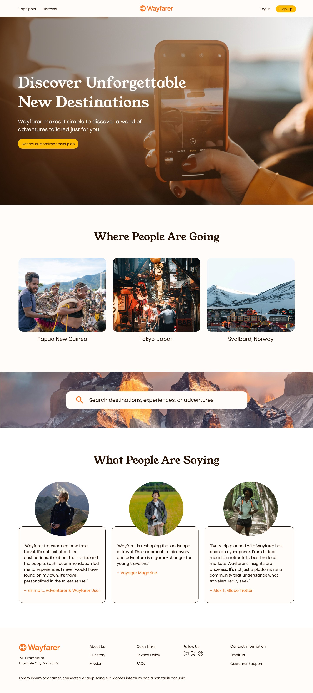
Hover over the screen to scroll through the full page.Tap the screen to scroll through the full page.
Exploration
I wanted the page to feel adventurous, bold and inviting for travelers aged 21 to 30, so I looked for that vibe around me and online. A budget flight finder, Going, stood out for its color, type and doodles.
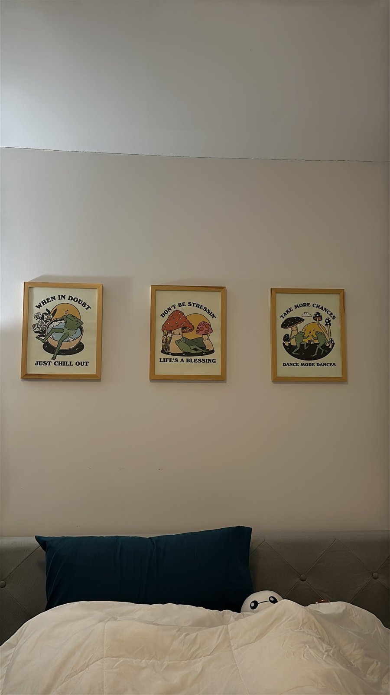
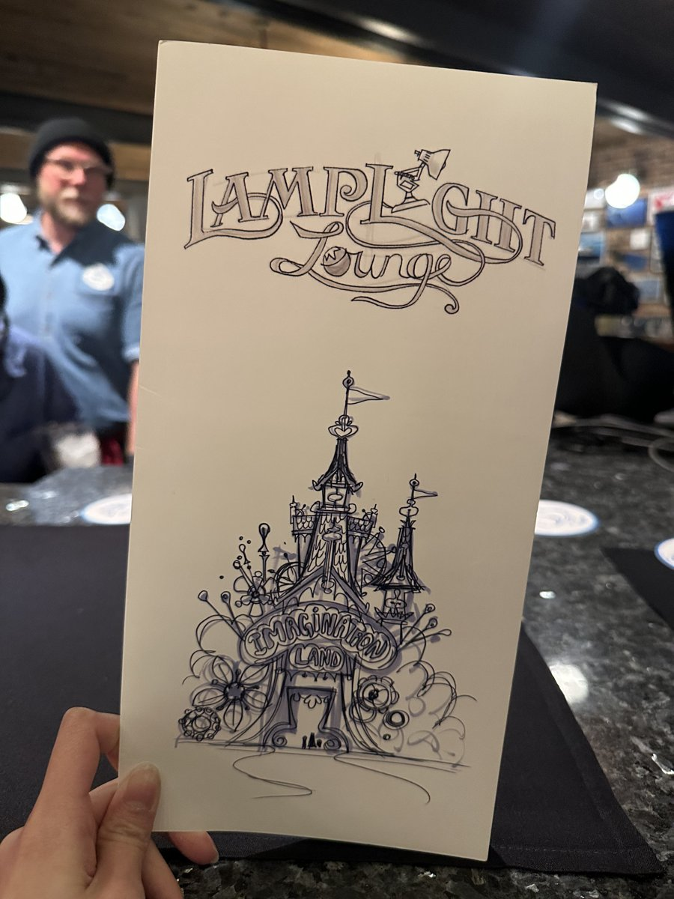
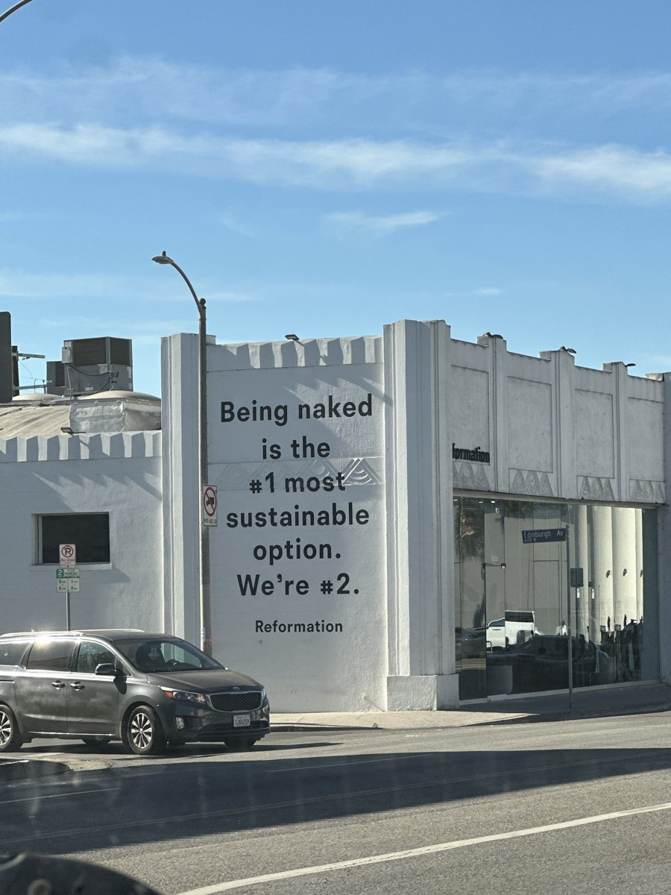
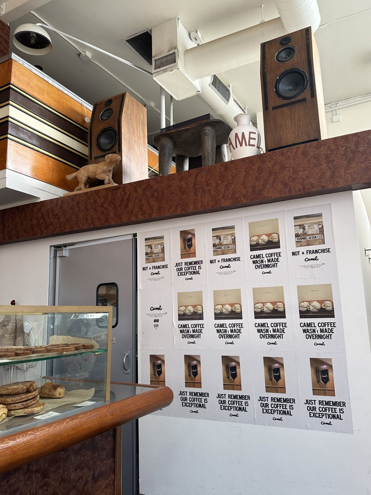
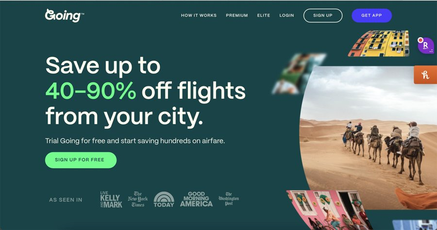
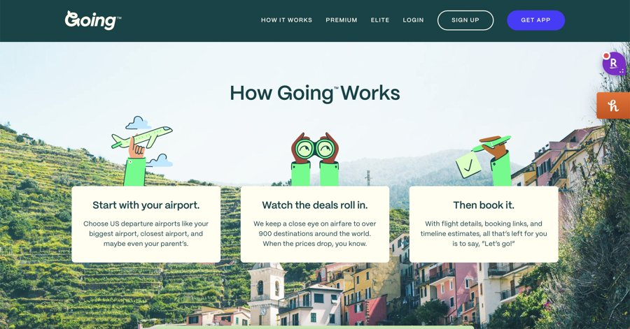
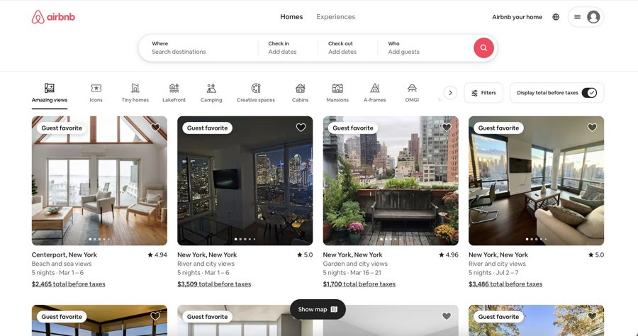
Sketching
I sketched layout options by hand before committing to one, then planned how the page would adapt to mobile.
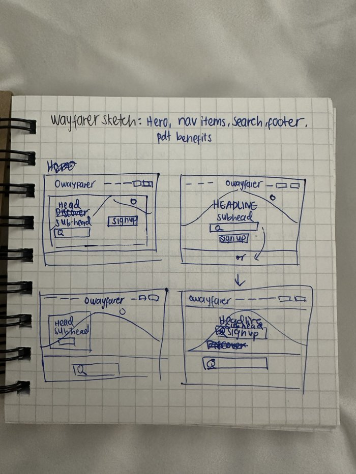
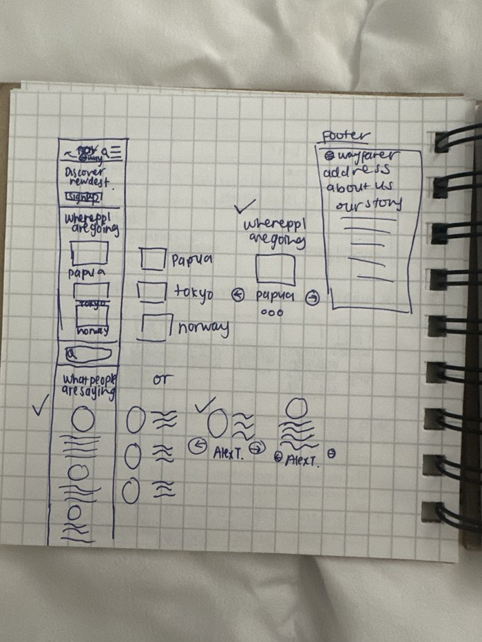
Wireframing
After deciding on one layout, I digitized my sketch in Figma to create a wireframe.
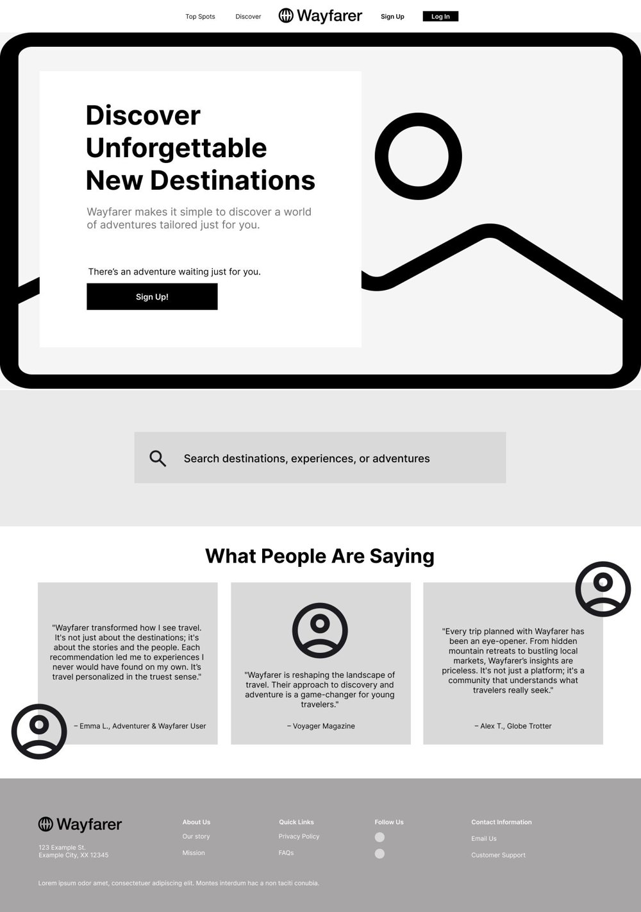
Establishing a design system
I picked bright colors to match the brand values, then settled on an analogous palette that works with the hero image. A serif for headers and a sans serif for body text give contrast, with the serif’s playful strokes adding fluidity.
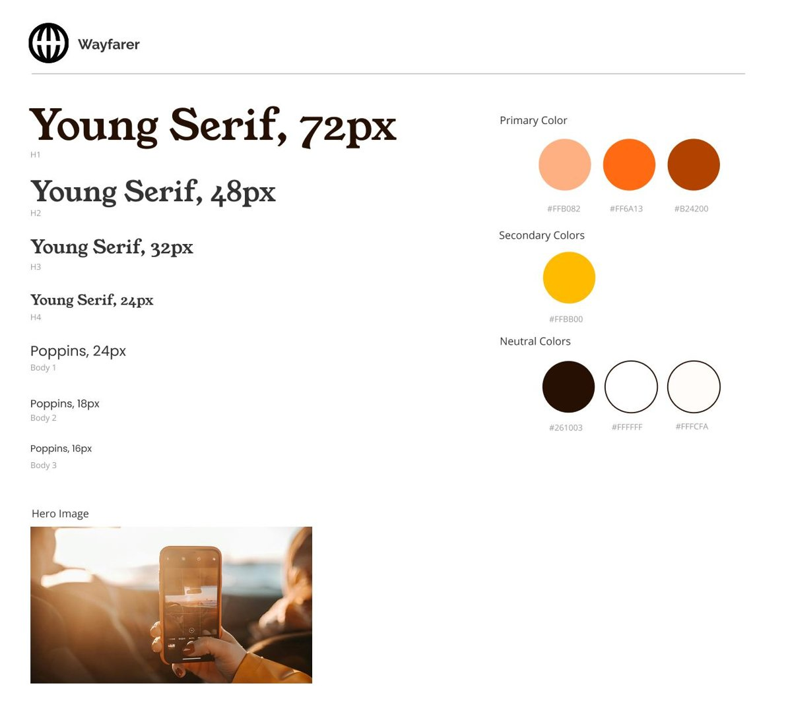
Prototyping for readability
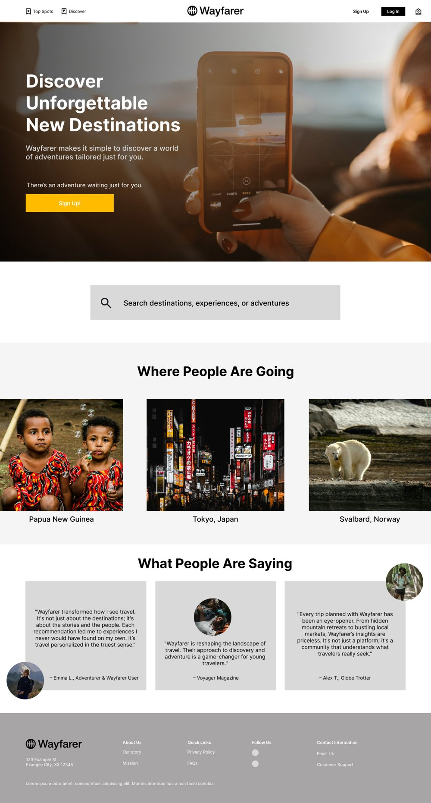
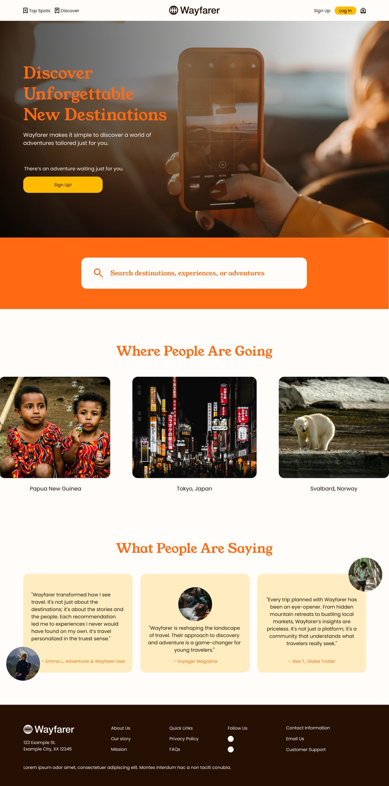
Hover a number to see the change.
- 1Applied the style tile’s colors and type
- 2Black CTA text after a contrast check
- 3Rounded corners for a warmer, more inviting feel
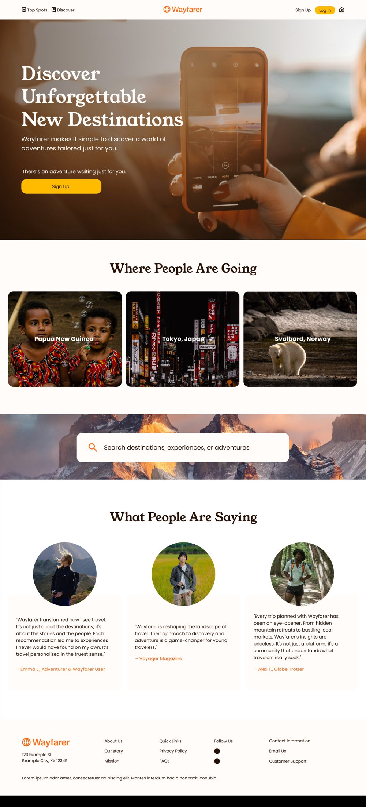
Hover a number to see the change.
- 4Neutral headers for higher contrast
- 5Brighter destination photos
- 6Fewer colors, so the page feels less busy
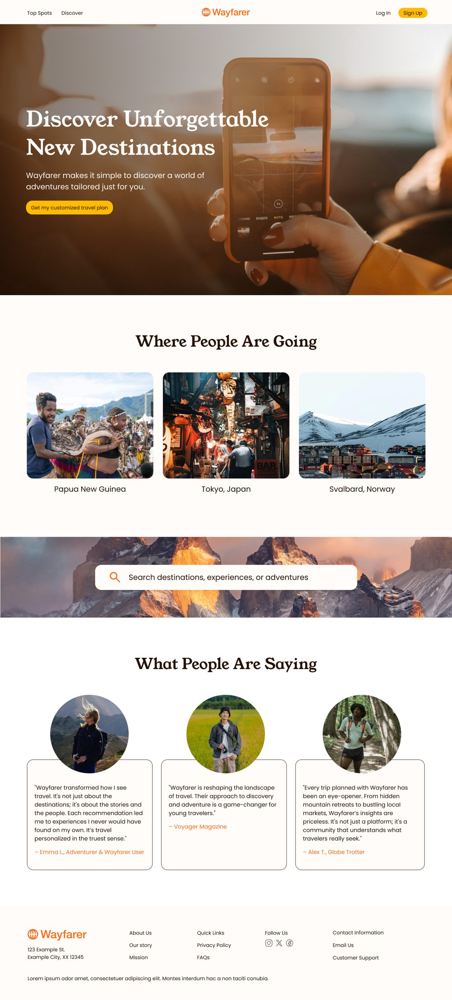
Hover a number to see the change.
- 7Headline shortened to two lines
- 8One clear call to action
- 9Outlined testimonial cards
Adapting to mobile
I turned the multi-column sections into swipeable carousels so the page reads in one column on a phone.
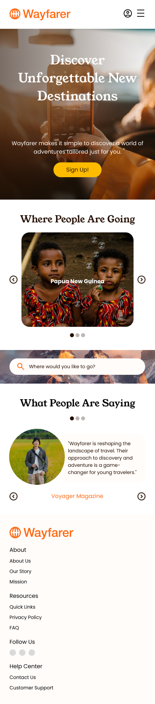
Hover a number to see the change.
- 1Carousels for destinations and testimonials
- 2A full-width search bar
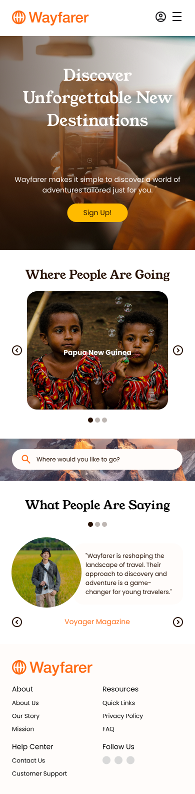
Hover a number to see the change.
- 3Footer links regrouped into two columns, so the page ends sooner
Reflection
Simple is often better: clear usability is what makes users want to come back.